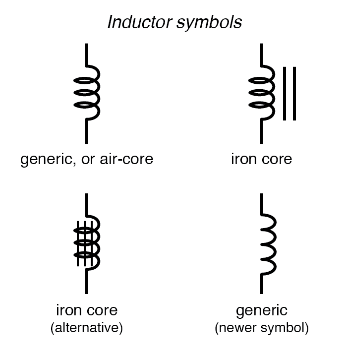
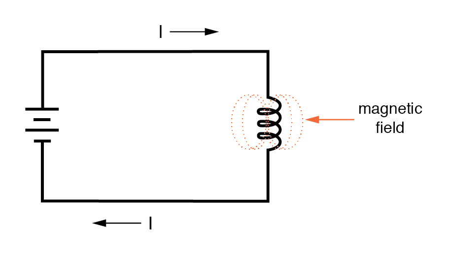
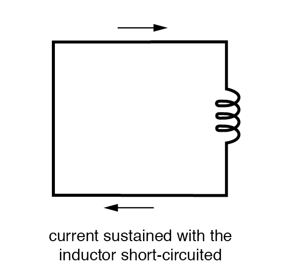
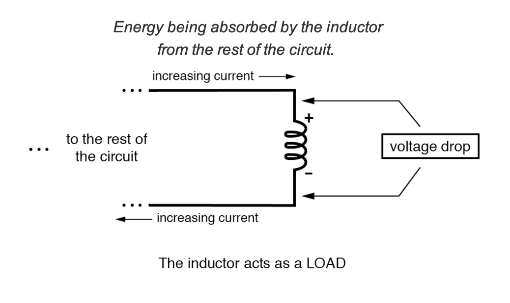
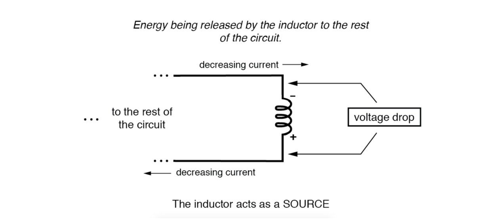

Whenever electrons flow through a conductor, a magnetic field will develop around that conductor. This effect is called electromagnetism.
Magnetic fields affect the alignment of electrons in an atom, and can cause physical force to develop between atoms across space just as with electric fields developing force between electrically charged particles. Like electric fields, magnetic fields can occupy completely empty space, and affect matter at a distance.
Fields have two measures: a field force and a field flux. The field force is the amount of “push” that a field exerts over a certain distance. The field flux is the total quantity, or effect, of the field through space. Field force and flux are roughly analogous to voltage (“push”) and current (flow) through a conductor, respectively, although field flux can exist in totally empty space (without the motion of particles such as electrons) whereas current can only take place where there are free electrons to move.
Field flux can be opposed in space, just as the flow of electrons can be opposed by resistance. The amount of field flux that will develop in space is proportional to the amount of field force applied, divided by the amount of opposition to flux. Just as the type of conducting material dictates that conductor’s specific resistance to electric current, the type of material occupying the space through which a magnetic field force is impressed dictates the specific opposition to magnetic field flux.
Whereas an electric field flux between two conductors allows for an accumulation of free electron charge within those conductors, a magnetic field flux allows for a certain “inertia” to accumulate in the flow of electrons through the conductor producing the field.
Inductors are components designed to take advantage of this phenomenon by shaping the length of conductive wire in the form of a coil. This shape creates a stronger magnetic field than what would be produced by a straight wire. Some inductors are formed with wire wound in a self-supporting coil.
Others wrap the wire around a solid core material of some type. Sometimes the core of an inductor will be straight, and other times it will be joined in a loop (square, rectangular, or circular) to fully contain the magnetic flux. These design options all have an effect on the performance and characteristics of inductors.
The schematic symbol for an inductor, like the capacitor, is quite simple, being little more than a coil symbol representing the coiled wire. Although a simple coil shape is the generic symbol for any inductor, inductors with cores are sometimes distinguished by the addition of parallel lines to the axis of the coil. A newer version of the inductor symbol dispenses with the coil shape in favor of several “humps” in a row:

As the electric current produces a concentrated magnetic field around the coil, this field flux equates to a storage of energy representing the kinetic motion of the electrons through the coil. The more current in the coil, the stronger the magnetic field will be, and the more energy the inductor will store.

Because inductors store the kinetic energy of moving electrons in the form of a magnetic field, they behave quite differently than resistors (which simply dissipate energy in the form of heat) in a circuit. Energy storage in an inductor is a function of the amount of current through it.
An inductor’s ability to store energy as a function of current results in a tendency to try to maintain current at a constant level. In other words, inductors tend to resist changes in current. When current through an inductor is increased or decreased, the inductor “resists” the change by producing a voltage between its leads in opposing polarity to the change.
To store more energy in an inductor, the current through it must be increased. This means that its magnetic field must increase in strength, and that change in field strength produces the corresponding voltage according to the principle of electromagnetic self-induction.
Conversely, to release energy from an inductor, the current through it must be decreased. This means that the inductor’s magnetic field must decrease in strength, and that change in field strength self-induces a voltage drop of just the opposite polarity.
Hypothetically, an inductor left short-circuited will maintain a constant rate of current through it with no external assistance:

Practically speaking, however, the ability for an inductor to self-sustain current is realized only with superconductive wire, as the wire resistance in any normal inductor is enough to cause current to decay very quickly with no external source of power.
When the current through an inductor is increased, it drops a voltage opposing the direction of current flow, acting as a power load. In this condition, the inductor is said to be charging, because there is an increasing amount of energy being stored in its magnetic field. Note the polarity of the voltage with regard to the direction of current:

Conversely, when the current through the inductor is decreased, it drops a voltage aiding the direction of current flow, acting as a power source. In this condition, the inductor is said to be discharging, because its store of energy is decreasing as it releases energy from its magnetic field to the rest of the circuit. Note the polarity of the voltage with regard to the direction of current.

If a source of electric power is suddenly applied to an unmagnetized inductor, the inductor will initially resist current flow by dropping the full voltage of the source. As current begins to increase, a stronger and stronger magnetic field will be created, absorbing energy from the source. Eventually the current reaches a maximum level, and stops increasing. At this point, the inductor stops absorbing energy from the source and is dropping minimum voltage across its leads, while the current remains at a maximum level.
As an inductor stores more energy, its current level increases, while its voltage drop decreases. Note that this is precisely the opposite of capacitor behavior, where the storage of energy results in an increased voltage across the component! Whereas capacitors store their energy charge by maintaining a static voltage, inductors maintain their energy “charge” by maintaining a steady current through the coil.
The type of material the wire is coiled around greatly impacts the strength of the magnetic field flux (and therefore the amount of stored energy) generated for any given amount of current through the coil. Coil cores made of ferromagnetic materials (such as soft iron) will encourage stronger field fluxes to develop with a given field force than nonmagnetic substances such as aluminum or air.
The measure of an inductor’s ability to store energy for a given amount of current flow is called inductance. Not surprisingly, inductance is also a measure of the intensity of opposition to changes in current (exactly how much self-induced voltage will be produced for a given rate of change of current). Inductance is symbolically denoted with a capital “L,” and is measured in the unit of the Henry, abbreviated as “H.”
An obsolete name for an inductor is choke, so called for its common usage to block (“choke”) high-frequency AC signals in radio circuits. Another name for an inductor, still used in modern times, is reactor, especially when used in large power applications. Both of these names will make more sense after you’ve studied alternating current (AC) circuit theory, and especially a principle known as inductive reactance.
REVIEW: